pacman::p_load("forecast",
"dplyr")
Amtrak.data <- read.csv(".../Amtrak.csv") # 데이터 불러오기
Amtrak.data %>%
as_tibble7 Regression-based Forecasting
회귀모형에 기반한 예측 방법의 순서도는 다음과 같다.
7.1 Amtrak
예제 데이터로 사용하는 "Amtrak.csv"은 1991년 1월부터 2004년 3월까지 미국 철도 회사인 암트랙에서 제공한 월간 승객 수(단위 : 1,000명)가 기록되어져 있다.
7.1.1 데이터 불러오기
# A tibble: 159 × 2
Month Ridership
<chr> <dbl>
1 01/01/1991 1709.
2 01/02/1991 1621.
3 01/03/1991 1973.
4 01/04/1991 1812.
5 01/05/1991 1975.
6 01/06/1991 1862.
7 01/07/1991 1940.
8 01/08/1991 2013.
9 01/09/1991 1596.
10 01/10/1991 1725.
# ℹ 149 more rows7.1.2 데이터 전처리
Caution! CSV 파일로 불러온 데이터를 살펴보면 승객 수를 포함하는 변수 Ridership가 수치형임을 알 수 있다. 시계열 데이터 분석을 위해 함수 ts()를 이용하여 해당 변수를 시계열 객체로 변환해야 한다.
# ts로 변환
ridership.ts <- ts(Amtrak.data$Ridership,
start = c(1991, 1), # 시계열의 시작 연도 / c(1991, 1) : 1991년 1월
frequency = 12) # 주기 / 월별 시계열로 1년에 12번 관측# 시계열 그림
plot(ridership.ts,
xlab = "Time", ylab = "Ridership (in 000s)",
ylim = c(1300, 2300))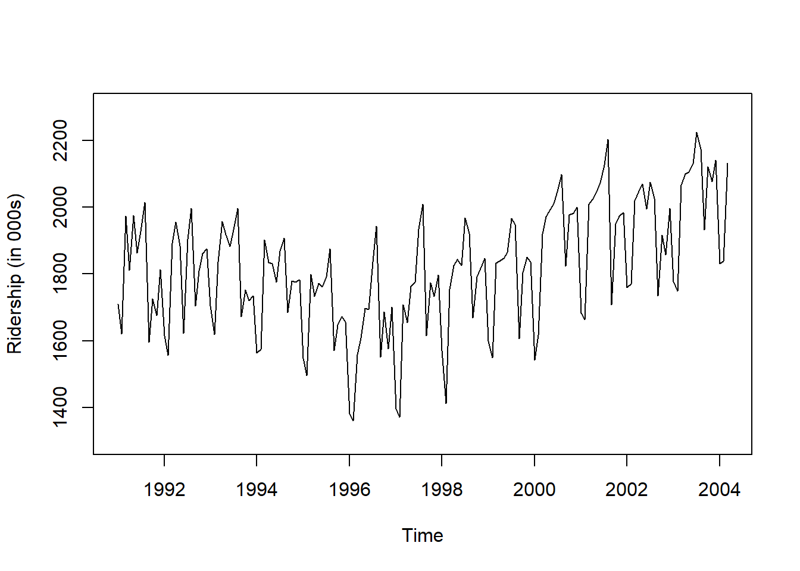
Result! 시계열 그림을 살펴보면 Amtrak 데이터는 U자 형태의 추세를 발견할 수 있으며, 여름(7월과 8월) 동안에 승객이 급증하는 뚜렷한 계절변동도 볼 수 있다.
7.1.3 데이터 분할
Caution! 시계열 데이터 분석 시 모형의 과적합을 피하고 미래 데이터에 대한 예측력을 계산하기 위해 Training Dataset과 Test Dataset으로 분할해야 한다. 시계열 데이터의 경우, 시간에 의존하기 때문에 시간 순서를 고려하여 데이터를 분할해야 한다. 즉, 앞 시점의 데이터를 Training Dataset로 사용하여 모형을 구축하고, 뒷 시점의 데이터를 Test Dataset로 사용하여 구축된 모형의 성능을 평가한다. 여기서는 데이터 분할을 위해 함수 window()를 사용한다.
# Partition
train.ts <- window(ridership.ts,
start = c(1991, 1), # 분할하고자 하는 시계열의 시작 연도 / c(1991, 1) : 1991년 1월
end = c(2001, 3)) # 분할하고자 하는 시계열의 마지막 연도 / c(2001, 3) : 2001년 3월
test.ts <- window(ridership.ts,
start = c(2001, 4)) # 분할하고자 하는 시계열의 시작 연도 / c(2001, 4) : 2001년 4월
nTest <- length(test.ts) # Test Dataset의 데이터 포인트 개수train.ts Jan Feb Mar Apr May Jun Jul Aug Sep Oct Nov Dec
1991 1708.917 1620.586 1972.715 1811.665 1974.964 1862.356 1939.860 2013.264 1595.657 1724.924 1675.667 1813.863
1992 1614.827 1557.088 1891.223 1955.981 1884.714 1623.042 1903.309 1996.712 1703.897 1810.000 1861.601 1875.122
1993 1705.259 1618.535 1836.709 1957.043 1917.185 1882.398 1933.009 1996.167 1672.841 1752.827 1720.377 1734.292
1994 1563.365 1573.959 1902.639 1833.888 1831.049 1775.755 1867.508 1906.608 1685.632 1778.546 1775.995 1783.350
1995 1548.415 1496.925 1798.316 1732.895 1772.345 1761.207 1791.655 1874.820 1571.309 1646.948 1672.631 1656.845
1996 1381.758 1360.852 1558.575 1608.420 1696.696 1693.183 1835.516 1942.573 1551.401 1686.508 1576.204 1700.433
1997 1396.588 1371.690 1707.522 1654.604 1762.903 1775.800 1934.219 2008.055 1615.924 1773.910 1732.368 1796.626
1998 1570.330 1412.691 1754.641 1824.932 1843.289 1825.964 1968.172 1921.645 1669.597 1791.474 1816.714 1846.754
1999 1599.427 1548.804 1832.333 1839.720 1846.498 1864.852 1965.743 1949.002 1607.373 1803.664 1850.309 1836.435
2000 1541.660 1616.928 1919.538 1971.493 1992.301 2009.763 2053.996 2097.471 1823.706 1976.997 1981.408 2000.153
2001 1683.148 1663.404 2007.928 test.ts Jan Feb Mar Apr May Jun Jul Aug Sep Oct Nov Dec
2001 2023.792 2047.008 2072.913 2126.717 2202.638 1707.693 1950.716 1973.614 1984.729
2002 1759.629 1770.595 2019.912 2048.398 2068.763 1994.267 2075.258 2026.560 1734.155 1916.771 1858.345 1996.352
2003 1778.033 1749.489 2066.466 2098.899 2104.911 2129.671 2223.349 2174.360 1931.406 2121.470 2076.054 2140.677
2004 1831.508 1838.006 2132.446 nTest[1] 367.2 Model with Trend
예제 데이터 Amtrak은 전반적인 추세가 선형인 것 같지 않지만 선형 추세가 어떻게 구축되는지 설명하기 위해서 먼저 가장 간단한 선형 추세를 고려해본다.
7.2.1 선형 추세
- 가장 간단한 선형추세모형은 \(Y_{t}=\beta_{0}+\beta_{1}t+\epsilon_t\)이다.
- \(Y_{t}\) : 시점 \(t\)에서의 관측값
- \(t\) : 시간인덱스로써 \(1, 2, \ldots, n\)
- \(\beta_{0}\) : 수준(Level)
- \(\beta_{1}\) : 추세(Trend)에 대한 회귀계수
- \(\epsilon_t\) : 잡음(Noise)
Caution! Package "forecast"에서 제공하는 함수 tslm()를 이용하여 쉽게 시계열에 회귀모형을 적용할 수 있다. 선형추세를 가지는 모형은 함수 tslm()에 Target ~ trend를 해주면 된다.
# 선형 추세를 반영한 회귀모형
train.lm <- tslm(train.ts ~ trend)
summary(train.lm) # 모형 구축 결과
Call:
tslm(formula = train.ts ~ trend)
Residuals:
Min 1Q Median 3Q Max
-411.29 -114.02 16.06 129.28 306.35
Coefficients:
Estimate Std. Error t value Pr(>|t|)
(Intercept) 1750.3595 29.0729 60.206 <2e-16 ***
trend 0.3514 0.4069 0.864 0.39
---
Signif. codes: 0 '***' 0.001 '**' 0.01 '*' 0.05 '.' 0.1 ' ' 1
Residual standard error: 160.2 on 121 degrees of freedom
Multiple R-squared: 0.006125, Adjusted R-squared: -0.002089
F-statistic: 0.7456 on 1 and 121 DF, p-value: 0.3896Result! 모형 구축 결과에 따르면, \(p\)값이 0.3896으로 유의수준 0.05에서 \(p\)값이 0.05보다 크기 때문에 추정된 회귀식이 시계열에 적절하다는 증거가 부족하다.
Caution! 구축된 모형을 이용하여 예측을 수행하기 위해 Package "forecast"에서 제공하는 함수 forecast()를 이용하면 된다. 옵션 h에는 미래 몇 시점까지 예측할 것인지를 입력한다.
# 선형추세모형을 이용한 예측
train.lm.pred <- forecast(train.lm,
h = nTest, # Test Dataset의 데이터 포인트 개수만큼 예측값 계산
level = 0) # 예측 구간은 계산 X
train.lm.pred Point Forecast Lo 0 Hi 0
Apr 2001 1793.930 1793.930 1793.930
May 2001 1794.281 1794.281 1794.281
Jun 2001 1794.632 1794.632 1794.632
Jul 2001 1794.984 1794.984 1794.984
Aug 2001 1795.335 1795.335 1795.335
Sep 2001 1795.687 1795.687 1795.687
Oct 2001 1796.038 1796.038 1796.038
Nov 2001 1796.389 1796.389 1796.389
Dec 2001 1796.741 1796.741 1796.741
Jan 2002 1797.092 1797.092 1797.092
Feb 2002 1797.443 1797.443 1797.443
Mar 2002 1797.795 1797.795 1797.795
Apr 2002 1798.146 1798.146 1798.146
May 2002 1798.498 1798.498 1798.498
Jun 2002 1798.849 1798.849 1798.849
Jul 2002 1799.200 1799.200 1799.200
Aug 2002 1799.552 1799.552 1799.552
Sep 2002 1799.903 1799.903 1799.903
Oct 2002 1800.254 1800.254 1800.254
Nov 2002 1800.606 1800.606 1800.606
Dec 2002 1800.957 1800.957 1800.957
Jan 2003 1801.308 1801.308 1801.308
Feb 2003 1801.660 1801.660 1801.660
Mar 2003 1802.011 1802.011 1802.011
Apr 2003 1802.363 1802.363 1802.363
May 2003 1802.714 1802.714 1802.714
Jun 2003 1803.065 1803.065 1803.065
Jul 2003 1803.417 1803.417 1803.417
Aug 2003 1803.768 1803.768 1803.768
Sep 2003 1804.119 1804.119 1804.119
Oct 2003 1804.471 1804.471 1804.471
Nov 2003 1804.822 1804.822 1804.822
Dec 2003 1805.174 1805.174 1805.174
Jan 2004 1805.525 1805.525 1805.525
Feb 2004 1805.876 1805.876 1805.876
Mar 2004 1806.228 1806.228 1806.228par(mfrow = c(2, 1))
# 시계열 그림
plot(train.lm.pred,
ylim = c(1300, 2600), xlim = c(1991, 2006.25), # 축 범위
ylab = "Ridership", xlab = "Time", # 축 이름
bty = "l", # 선으로 표시
xaxt = "n", # X축 눈금 제거
main = "", # 제목 제거
flty = 2) # 선 종류 / 2 : 점선
# For X축 눈금 표시
axis(1, at = seq(1991, 2006, 1),
labels = format(seq(1991, 2006, 1)))
# 구축된 모형을 이용하여 계산된 Training Dataset 데이터 포인트의 예측값
lines(train.lm.pred$fitted,
lwd = 2, # 선 굵기
col = "blue") # 선 색깔
# Test Dataset 데이터 포인트
lines(test.ts)
# 잔차에 대한 시계열 그림
plot(train.lm$residuals, # 잔차
ylim = c(-420, 500), xlim = c(1991, 2006.25), # 축 범위
ylab = "Residual", xlab = "Time", # 축 이름
bty = "l", # 선으로 표시
xaxt = "n", # X축 눈금 제거
main = "") # 제목 제거
# For X축 눈금 표시
axis(1, at = seq(1991, 2006, 1),
labels = format(seq(1991, 2006, 1)))
# Test Dataset 데이터 포인트에 대한 잔차 예측값
lines(test.ts - train.lm.pred$mean) 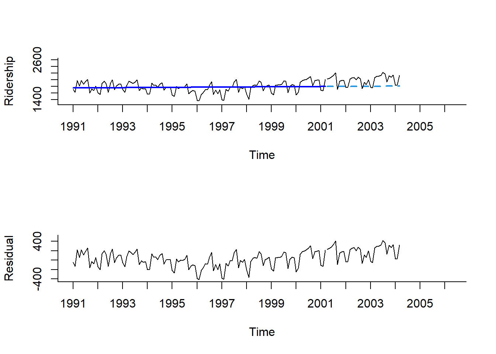
Result! 첫 번째 그래프는 구축된 선형추세모형으로부터 계산된 Training Dataset의 데이터 포인트에 대한 값과 예측값을 파란색 선으로 나타내고 있으며, 검은색 선은 실제값을 의미한다. 두 번째 그래프는 잔차에 대한 그래프이다. 이 두 그래프를 보면 추정값과 예측값이 실제값과 얼마나 차이가 나는지 볼 수 있으며, 잔차 그래프를 보면 잔차에 여전히 추세와 계절성이 남아있다는 것을 알 수 있다.
7.2.2 지수 추세
- 지수 추세는 시간에 따라서 시계열이 지수적으로 증가/감소하며 비선형 추세의 형태 중 하나이다.
- 모형식은 \(\log{Y_{t}}=\beta_{0}+\beta_{1}t+\epsilon_ t\)로 \(Y_{t}=ce^{\beta_{1}t+\epsilon}\)의 양변에 \(\log\)를 취하여 비선형을 선형으로 변환하여 분석한다.
Caution! 지수 추세를 반영하기 위해서는 함수 tslm()에서 옵션 lambda = 0을 입력하면 된다. 옵션 lambda는 Box-Cox 변환을 적용하는데 사용되며, lambda = 0이면 \(\log{Y_{t}}\)를 이용한다. 예측의 경우, lambda = 0을 입력해도 자동으로 원래 Scale로 변환된 결과를 출력한다.
# 지수 추세를 반영한 회귀모형
train.lm.expo.trend <- tslm(train.ts ~ trend,
lambda = 0)
summary(train.lm.expo.trend) # 모형 구축 결과
Call:
tslm(formula = train.ts ~ trend, lambda = 0)
Residuals:
Min 1Q Median 3Q Max
-0.25989 -0.06184 0.01299 0.07457 0.16310
Coefficients:
Estimate Std. Error t value Pr(>|t|)
(Intercept) 7.4646979 0.0168680 442.535 <2e-16 ***
trend 0.0001783 0.0002361 0.755 0.451
---
Signif. codes: 0 '***' 0.001 '**' 0.01 '*' 0.05 '.' 0.1 ' ' 1
Residual standard error: 0.09297 on 121 degrees of freedom
Multiple R-squared: 0.004694, Adjusted R-squared: -0.003532
F-statistic: 0.5707 on 1 and 121 DF, p-value: 0.4515# 지수추세모형을 이용한 예측
train.lm.expo.trend.pred <- forecast(train.lm.expo.trend,
h = nTest, # Test Dataset의 데이터 포인트 개수만큼 예측값 계산
level = 0) # 예측 구간은 계산 X
train.lm.expo.trend.pred Point Forecast Lo 0 Hi 0
Apr 2001 1784.356 1784.356 1784.356
May 2001 1784.674 1784.674 1784.674
Jun 2001 1784.993 1784.993 1784.993
Jul 2001 1785.311 1785.311 1785.311
Aug 2001 1785.629 1785.629 1785.629
Sep 2001 1785.948 1785.948 1785.948
Oct 2001 1786.266 1786.266 1786.266
Nov 2001 1786.585 1786.585 1786.585
Dec 2001 1786.904 1786.904 1786.904
Jan 2002 1787.222 1787.222 1787.222
Feb 2002 1787.541 1787.541 1787.541
Mar 2002 1787.860 1787.860 1787.860
Apr 2002 1788.179 1788.179 1788.179
May 2002 1788.498 1788.498 1788.498
Jun 2002 1788.817 1788.817 1788.817
Jul 2002 1789.136 1789.136 1789.136
Aug 2002 1789.455 1789.455 1789.455
Sep 2002 1789.774 1789.774 1789.774
Oct 2002 1790.093 1790.093 1790.093
Nov 2002 1790.413 1790.413 1790.413
Dec 2002 1790.732 1790.732 1790.732
Jan 2003 1791.052 1791.052 1791.052
Feb 2003 1791.371 1791.371 1791.371
Mar 2003 1791.690 1791.690 1791.690
Apr 2003 1792.010 1792.010 1792.010
May 2003 1792.330 1792.330 1792.330
Jun 2003 1792.649 1792.649 1792.649
Jul 2003 1792.969 1792.969 1792.969
Aug 2003 1793.289 1793.289 1793.289
Sep 2003 1793.609 1793.609 1793.609
Oct 2003 1793.929 1793.929 1793.929
Nov 2003 1794.249 1794.249 1794.249
Dec 2003 1794.569 1794.569 1794.569
Jan 2004 1794.889 1794.889 1794.889
Feb 2004 1795.209 1795.209 1795.209
Mar 2004 1795.529 1795.529 1795.529Result! 예측값은 원래 Scale로 변환된 결과를 출력한다.
par(mfrow = c(1, 1))
# 시계열 그림
plot(train.lm.expo.trend.pred,
ylim = c(1300, 2600), xlim = c(1991, 2006.25), # 축 범위
ylab = "Ridership", xlab = "Time", # 축 이름
bty = "l", # 선으로 표시
xaxt = "n", # X축 눈금 제거
main = "", # 제목 제거
flty = 2) # 선 종류 / 2 : 점선
# For X축 눈금 표시
axis(1, at = seq(1991, 2006, 1),
labels = format(seq(1991, 2006, 1)))
# 구축된 모형을 이용하여 계산된 Training Dataset 데이터 포인트의 예측값
lines(train.lm.expo.trend.pred$fitted,
lwd = 2, # 선 굵기
col = "blue") # 선 색깔
# Test Dataset 데이터 포인트
lines(test.ts) 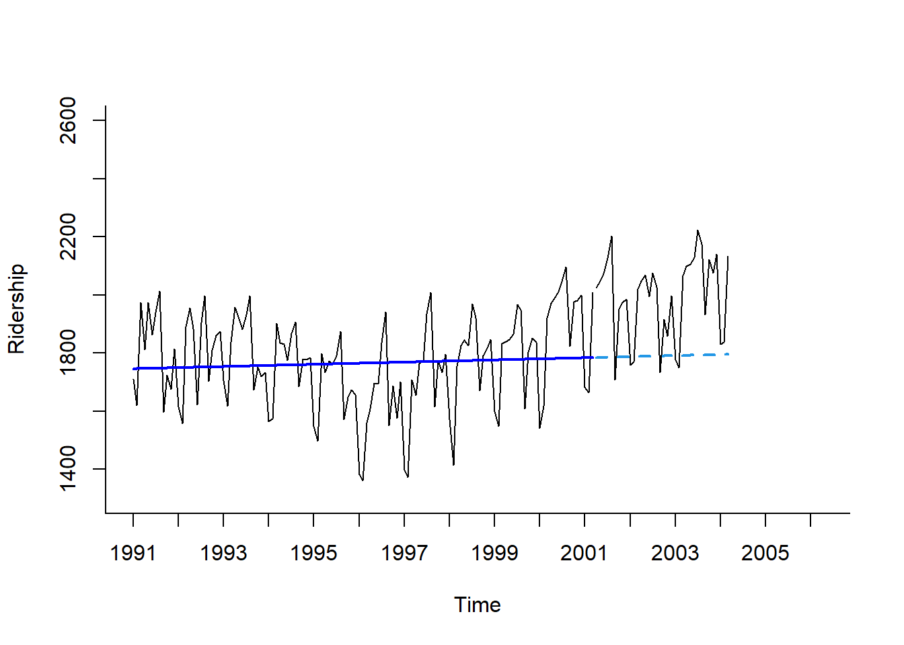
7.2.3 다항 추세
- 다항 추세는 비선형 추세의 또 다른 형태이다.
- 예제 데이터
Amtrak은 U자 형태의 추세를 가지므로 2차 함수 형태를 고려하였으며 모형식은 \(Y_{t}=\beta_{0}+\beta_{1}t+\beta_{2}t^2+\epsilon_t\)이다.
Caution! 다항 추세를 반영하기 위해 함수 I()를 이용한다.
# 다항 추세를 반영한 회귀모형
train.lm.poly.trend <- tslm(train.ts ~ trend + I(trend^2))
summary(train.lm.poly.trend) # 모형 구축 결과
Call:
tslm(formula = train.ts ~ trend + I(trend^2))
Residuals:
Min 1Q Median 3Q Max
-344.79 -101.86 40.89 98.54 279.81
Coefficients:
Estimate Std. Error t value Pr(>|t|)
(Intercept) 1888.88401 40.91521 46.166 < 2e-16 ***
trend -6.29780 1.52327 -4.134 6.63e-05 ***
I(trend^2) 0.05362 0.01190 4.506 1.55e-05 ***
---
Signif. codes: 0 '***' 0.001 '**' 0.01 '*' 0.05 '.' 0.1 ' ' 1
Residual standard error: 148.8 on 120 degrees of freedom
Multiple R-squared: 0.1499, Adjusted R-squared: 0.1358
F-statistic: 10.58 on 2 and 120 DF, p-value: 5.844e-05# 다항추세모형을 이용한 예측
train.lm.poly.trend.pred <- forecast(train.lm.poly.trend,
h = nTest, # Test Dataset의 데이터 포인트 개수만큼 예측값 계산
level = 0) # 예측 구간은 계산 X
train.lm.poly.trend.pred Point Forecast Lo 0 Hi 0
Apr 2001 1932.454 1932.454 1932.454
May 2001 1939.508 1939.508 1939.508
Jun 2001 1946.670 1946.670 1946.670
Jul 2001 1953.938 1953.938 1953.938
Aug 2001 1961.314 1961.314 1961.314
Sep 2001 1968.797 1968.797 1968.797
Oct 2001 1976.388 1976.388 1976.388
Nov 2001 1984.085 1984.085 1984.085
Dec 2001 1991.890 1991.890 1991.890
Jan 2002 1999.803 1999.803 1999.803
Feb 2002 2007.822 2007.822 2007.822
Mar 2002 2015.949 2015.949 2015.949
Apr 2002 2024.182 2024.182 2024.182
May 2002 2032.523 2032.523 2032.523
Jun 2002 2040.972 2040.972 2040.972
Jul 2002 2049.527 2049.527 2049.527
Aug 2002 2058.190 2058.190 2058.190
Sep 2002 2066.960 2066.960 2066.960
Oct 2002 2075.838 2075.838 2075.838
Nov 2002 2084.822 2084.822 2084.822
Dec 2002 2093.914 2093.914 2093.914
Jan 2003 2103.113 2103.113 2103.113
Feb 2003 2112.419 2112.419 2112.419
Mar 2003 2121.833 2121.833 2121.833
Apr 2003 2131.354 2131.354 2131.354
May 2003 2140.982 2140.982 2140.982
Jun 2003 2150.717 2150.717 2150.717
Jul 2003 2160.560 2160.560 2160.560
Aug 2003 2170.509 2170.509 2170.509
Sep 2003 2180.566 2180.566 2180.566
Oct 2003 2190.731 2190.731 2190.731
Nov 2003 2201.002 2201.002 2201.002
Dec 2003 2211.381 2211.381 2211.381
Jan 2004 2221.867 2221.867 2221.867
Feb 2004 2232.460 2232.460 2232.460
Mar 2004 2243.161 2243.161 2243.161par(mfrow = c(2, 1))
# 시계열 그림
plot(train.lm.poly.trend.pred,
ylim = c(1300, 2600), xlim = c(1991, 2006.25), # 축 범위
ylab = "Ridership", xlab = "Time", # 축 이름
bty = "l", # 선으로 표시
xaxt = "n", # X축 눈금 제거
main = "", # 제목 제거
flty = 2) # 선 종류 / 2 : 점선
# For X축 눈금 표시
axis(1, at = seq(1991, 2006, 1),
labels = format(seq(1991, 2006, 1)))
# 구축된 모형을 이용하여 계산된 Training Dataset 데이터 포인트의 예측값
lines(train.lm.poly.trend.pred$fitted,
lwd = 2, # 선 굵기
col = "blue") # 선 색깔
# Test Dataset 데이터 포인트
lines(test.ts)
# 잔차에 대한 시계열 그림
plot(train.lm.poly.trend$residuals, # 잔차
ylim = c(-420, 500), xlim = c(1991, 2006.25), # 축 범위
ylab = "Residual", xlab = "Time", # 축 이름
bty = "l", # 선으로 표시
xaxt = "n", # X축 눈금 제거
main = "") # 제목 제거
# For X축 눈금 표시
axis(1, at = seq(1991, 2006, 1),
labels = format(seq(1991, 2006, 1)))
# Test Dataset 데이터 포인트에 대한 잔차 예측값
lines(test.ts - train.lm.poly.trend.pred$mean) 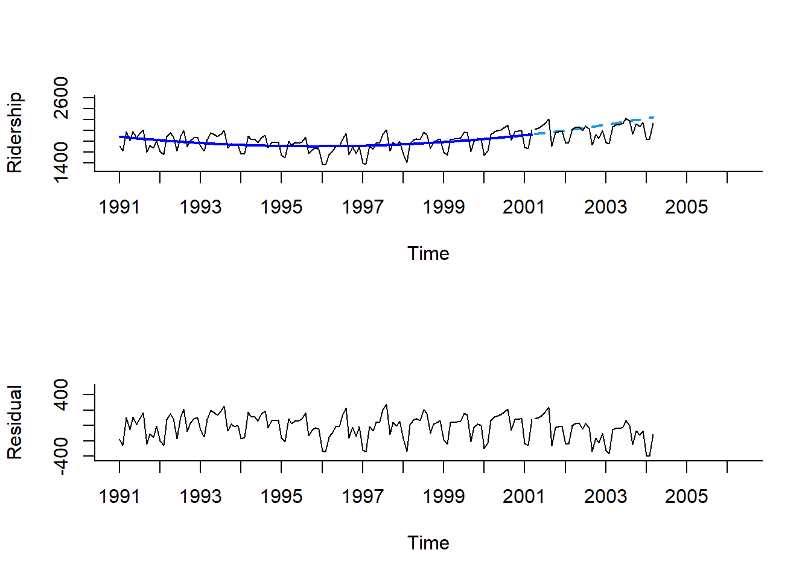
Result! 첫 번째 그래프를 보면 앞선 선형 추세와 지수 추세보다 추세를 잘 잡아내고 있다는 것을 알 수 있다. 게다가, 두 번째 그래프를 보면 잔차에 대해 추세는 없으며 오직 계절성만 존재한다는 것을 알 수 있다.
7.3 Model with Seasonality
- 계절 패턴은 시계열 패턴이 동일한 형태로 반복되는 현상을 의미한다.
- 계절성만 가지는 모형은 함수
tslm()에Target ~ season을 입력하면 된다.- 변수
season은 “0”과 “1” 값을 가지는 더미변수로 자동적으로 변환된다. - 예를 들어, 예제 데이터
Amtrak은 변수Season에 12개의 계절을 가지며, 분석을 위해 11개의 더미변수가 생성된다.
- 변수
7.3.1 Additive 계절성
train.lm.season <- tslm(train.ts ~ season) # 참조변수 = Season 1
summary(train.lm.season) # 모형 구축 결과
Call:
tslm(formula = train.ts ~ season)
Residuals:
Min 1Q Median 3Q Max
-276.165 -52.934 5.868 54.544 215.081
Coefficients:
Estimate Std. Error t value Pr(>|t|)
(Intercept) 1573.97 30.58 51.475 < 2e-16 ***
season2 -42.93 43.24 -0.993 0.3230
season3 260.77 43.24 6.030 2.19e-08 ***
season4 245.09 44.31 5.531 2.14e-07 ***
season5 278.22 44.31 6.279 6.81e-09 ***
season6 233.46 44.31 5.269 6.82e-07 ***
season7 345.33 44.31 7.793 3.79e-12 ***
season8 396.66 44.31 8.952 9.19e-15 ***
season9 75.76 44.31 1.710 0.0901 .
season10 200.61 44.31 4.527 1.51e-05 ***
season11 192.36 44.31 4.341 3.14e-05 ***
season12 230.42 44.31 5.200 9.18e-07 ***
---
Signif. codes: 0 '***' 0.001 '**' 0.01 '*' 0.05 '.' 0.1 ' ' 1
Residual standard error: 101.4 on 111 degrees of freedom
Multiple R-squared: 0.6348, Adjusted R-squared: 0.5986
F-statistic: 17.54 on 11 and 111 DF, p-value: < 2.2e-16Result! season8의 회귀계수는 396.66으로 8월의 평균 승객 수는 1월의 평균 승객 수보다 396.66배 높다.
# 계절변동을 반영한 회귀모형을 이용한 예측
train.lm.season.pred <- forecast(train.lm.season,
h = nTest, # Test Dataset의 데이터 포인트 개수만큼 예측값 계산
level = 0) # 예측 구간은 계산 X
train.lm.season.pred Point Forecast Lo 0 Hi 0
Apr 2001 1819.064 1819.064 1819.064
May 2001 1852.194 1852.194 1852.194
Jun 2001 1807.432 1807.432 1807.432
Jul 2001 1919.299 1919.299 1919.299
Aug 2001 1970.632 1970.632 1970.632
Sep 2001 1649.734 1649.734 1649.734
Oct 2001 1774.580 1774.580 1774.580
Nov 2001 1766.327 1766.327 1766.327
Dec 2001 1804.387 1804.387 1804.387
Jan 2002 1573.972 1573.972 1573.972
Feb 2002 1531.042 1531.042 1531.042
Mar 2002 1834.740 1834.740 1834.740
Apr 2002 1819.064 1819.064 1819.064
May 2002 1852.194 1852.194 1852.194
Jun 2002 1807.432 1807.432 1807.432
Jul 2002 1919.299 1919.299 1919.299
Aug 2002 1970.632 1970.632 1970.632
Sep 2002 1649.734 1649.734 1649.734
Oct 2002 1774.580 1774.580 1774.580
Nov 2002 1766.327 1766.327 1766.327
Dec 2002 1804.387 1804.387 1804.387
Jan 2003 1573.972 1573.972 1573.972
Feb 2003 1531.042 1531.042 1531.042
Mar 2003 1834.740 1834.740 1834.740
Apr 2003 1819.064 1819.064 1819.064
May 2003 1852.194 1852.194 1852.194
Jun 2003 1807.432 1807.432 1807.432
Jul 2003 1919.299 1919.299 1919.299
Aug 2003 1970.632 1970.632 1970.632
Sep 2003 1649.734 1649.734 1649.734
Oct 2003 1774.580 1774.580 1774.580
Nov 2003 1766.327 1766.327 1766.327
Dec 2003 1804.387 1804.387 1804.387
Jan 2004 1573.972 1573.972 1573.972
Feb 2004 1531.042 1531.042 1531.042
Mar 2004 1834.740 1834.740 1834.740par(mfrow = c(2, 1))
# 시계열 그림
plot(train.lm.season.pred,
ylim = c(1300, 2600), xlim = c(1991, 2006.25), # 축 범위
ylab = "Ridership", xlab = "Time", # 축 이름
bty = "l", # 선으로 표시
xaxt = "n", # X축 눈금 제거
main = "", # 제목 제거
flty = 2) # 선 종류 / 2 : 점선
# For X축 눈금 표시
axis(1, at = seq(1991, 2006, 1),
labels = format(seq(1991, 2006, 1)))
# 구축된 모형을 이용하여 계산된 Training Dataset 데이터 포인트의 예측값
lines(train.lm.season.pred$fitted,
lwd = 2, # 선 굵기
col = "blue") # 선 색깔
# Test Dataset 데이터 포인트
lines(test.ts)
# 잔차에 대한 시계열 그림
plot(train.lm.season$residuals, # 잔차
ylim = c(-420, 500), xlim = c(1991, 2006.25), # 축 범위
ylab = "Residual", xlab = "Time", # 축 이름
bty = "l", # 선으로 표시
xaxt = "n", # X축 눈금 제거
main = "") # 제목 제거
# For X축 눈금 표시
axis(1, at = seq(1991, 2006, 1),
labels = format(seq(1991, 2006, 1)))
# Test Dataset 데이터 포인트에 대한 잔차 예측값
lines(test.ts - train.lm.season.pred$mean) 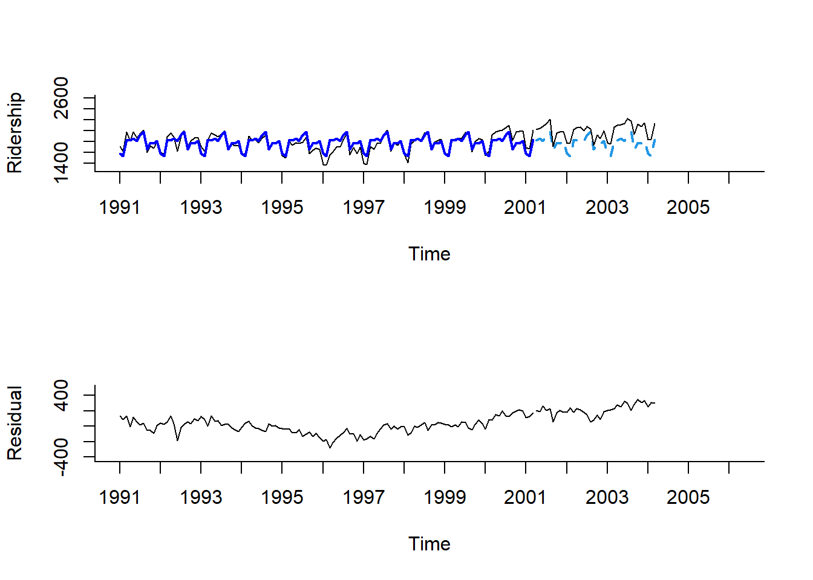
Result! 두 번째 그래프를 보면 잔차에 대해 계절변동은 제거되었지만 추세는 여전히 U자 형태로 남아있음을 알 수 있다.
7.3.2 Multiplicative 계절성
- 회귀모형을 통하여 특정 월이 기준 월에 비해 몇 % 증가(혹은 감소)했는지와 같은 비율을 알아보기 위해서는 계절변동의 곱을 반영하는 모형을 이용해야 한다.
- 계절변동의 곱을 반영하는 회귀모형의 구축방법은 Target을 \(\log{Y_t}\)로 사용하는 점을 제외하고는 Additive 계절성 방법과 동일하다.
- 이를 구현하기 위해 함수
tslm()에서 옵션lambda = 0을 입력한다.
- 이를 구현하기 위해 함수
train.expo.lm.season <- tslm(train.ts ~ season,
lambda = 0)
summary(train.expo.lm.season) # 모형 구축 결과
Call:
tslm(formula = train.ts ~ season, lambda = 0)
Residuals:
Min 1Q Median 3Q Max
-0.160824 -0.029798 0.005386 0.032081 0.116843
Coefficients:
Estimate Std. Error t value Pr(>|t|)
(Intercept) 7.35909 0.01765 416.839 < 2e-16 ***
season2 -0.02764 0.02497 -1.107 0.2706
season3 0.15326 0.02497 6.138 1.32e-08 ***
season4 0.14482 0.02558 5.661 1.20e-07 ***
season5 0.16388 0.02558 6.405 3.73e-09 ***
season6 0.13897 0.02558 5.432 3.33e-07 ***
season7 0.19994 0.02558 7.815 3.38e-12 ***
season8 0.22654 0.02558 8.855 1.53e-14 ***
season9 0.04825 0.02558 1.886 0.0619 .
season10 0.12114 0.02558 4.735 6.52e-06 ***
season11 0.11563 0.02558 4.520 1.56e-05 ***
season12 0.13760 0.02558 5.379 4.21e-07 ***
---
Signif. codes: 0 '***' 0.001 '**' 0.01 '*' 0.05 '.' 0.1 ' ' 1
Residual standard error: 0.05855 on 111 degrees of freedom
Multiple R-squared: 0.6378, Adjusted R-squared: 0.6019
F-statistic: 17.77 on 11 and 111 DF, p-value: < 2.2e-16# Multiplicative 계절변동을 반영한 회귀모형을 이용한 예측
train.expo.lm.season.pred <- forecast(train.expo.lm.season,
h = nTest, # Test Dataset의 데이터 포인트 개수만큼 예측값 계산
level = 0) # 예측 구간은 계산 X
train.expo.lm.season.pred Point Forecast Lo 0 Hi 0
Apr 2001 1815.129 1815.129 1815.129
May 2001 1850.055 1850.055 1850.055
Jun 2001 1804.545 1804.545 1804.545
Jul 2001 1917.999 1917.999 1917.999
Aug 2001 1969.685 1969.685 1969.685
Sep 2001 1648.045 1648.045 1648.045
Oct 2001 1772.648 1772.648 1772.648
Nov 2001 1762.908 1762.908 1762.908
Dec 2001 1802.080 1802.080 1802.080
Jan 2002 1570.413 1570.413 1570.413
Feb 2002 1527.598 1527.598 1527.598
Mar 2002 1830.513 1830.513 1830.513
Apr 2002 1815.129 1815.129 1815.129
May 2002 1850.055 1850.055 1850.055
Jun 2002 1804.545 1804.545 1804.545
Jul 2002 1917.999 1917.999 1917.999
Aug 2002 1969.685 1969.685 1969.685
Sep 2002 1648.045 1648.045 1648.045
Oct 2002 1772.648 1772.648 1772.648
Nov 2002 1762.908 1762.908 1762.908
Dec 2002 1802.080 1802.080 1802.080
Jan 2003 1570.413 1570.413 1570.413
Feb 2003 1527.598 1527.598 1527.598
Mar 2003 1830.513 1830.513 1830.513
Apr 2003 1815.129 1815.129 1815.129
May 2003 1850.055 1850.055 1850.055
Jun 2003 1804.545 1804.545 1804.545
Jul 2003 1917.999 1917.999 1917.999
Aug 2003 1969.685 1969.685 1969.685
Sep 2003 1648.045 1648.045 1648.045
Oct 2003 1772.648 1772.648 1772.648
Nov 2003 1762.908 1762.908 1762.908
Dec 2003 1802.080 1802.080 1802.080
Jan 2004 1570.413 1570.413 1570.413
Feb 2004 1527.598 1527.598 1527.598
Mar 2004 1830.513 1830.513 1830.513par(mfrow = c(1, 1))
# 시계열 그림
plot(train.expo.lm.season.pred,
ylim = c(1300, 2600), xlim = c(1991, 2006.25), # 축 범위
ylab = "Ridership", xlab = "Time", # 축 이름
bty = "l", # 선으로 표시
xaxt = "n", # X축 눈금 제거
main = "", # 제목 제거
flty = 2) # 선 종류 / 2 : 점선
# For X축 눈금 표시
axis(1, at = seq(1991, 2006, 1),
labels = format(seq(1991, 2006, 1)))
# 구축된 모형을 이용하여 계산된 Training Dataset 데이터 포인트의 예측값
lines(train.expo.lm.season.pred$fitted,
lwd = 2, # 선 굵기
col = "blue") # 선 색깔
# Test Dataset 데이터 포인트
lines(test.ts) 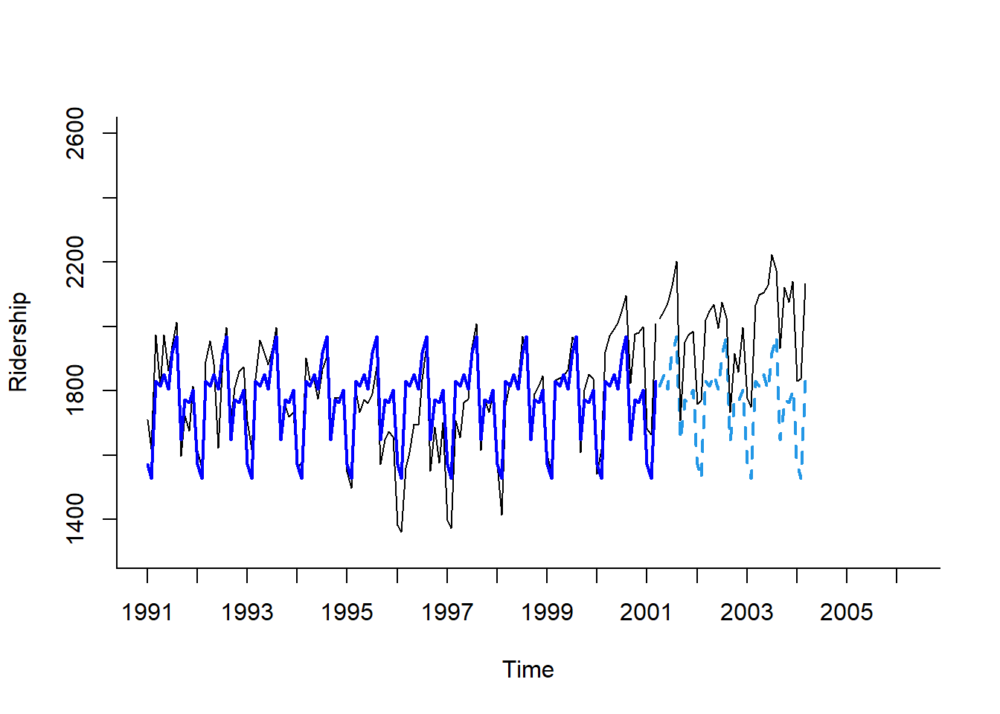
7.4 Model with Trend and Seasonality
- 추세와 계절변동을 동시에 가지는 시계열 모형은 함수
tslm()에서 옵션Target ~ trend + season을 입력하면 된다. - 예제 데이터
Amtrak은 U자 형태의 추세를 가지므로 이차 함수 추세와 계절변동을 동시에 반영하는 모형을 구축한다.
# 이차 함수 추세와 계절변동을 동시에 반영하는 모형 구축
train.lm.trend.season <- tslm(train.ts ~ trend + I(trend^2) + season)
summary(train.lm.trend.season) # 모형 구축 결과
Call:
tslm(formula = train.ts ~ trend + I(trend^2) + season)
Residuals:
Min 1Q Median 3Q Max
-213.775 -39.363 9.711 42.422 152.187
Coefficients:
Estimate Std. Error t value Pr(>|t|)
(Intercept) 1.697e+03 2.768e+01 61.318 < 2e-16 ***
trend -7.156e+00 7.293e-01 -9.812 < 2e-16 ***
I(trend^2) 6.074e-02 5.698e-03 10.660 < 2e-16 ***
season2 -4.325e+01 3.024e+01 -1.430 0.15556
season3 2.600e+02 3.024e+01 8.598 6.60e-14 ***
season4 2.606e+02 3.102e+01 8.401 1.83e-13 ***
season5 2.938e+02 3.102e+01 9.471 6.89e-16 ***
season6 2.490e+02 3.102e+01 8.026 1.26e-12 ***
season7 3.606e+02 3.102e+01 11.626 < 2e-16 ***
season8 4.117e+02 3.102e+01 13.270 < 2e-16 ***
season9 9.032e+01 3.102e+01 2.911 0.00437 **
season10 2.146e+02 3.102e+01 6.917 3.29e-10 ***
season11 2.057e+02 3.103e+01 6.629 1.34e-09 ***
season12 2.429e+02 3.103e+01 7.829 3.44e-12 ***
---
Signif. codes: 0 '***' 0.001 '**' 0.01 '*' 0.05 '.' 0.1 ' ' 1
Residual standard error: 70.92 on 109 degrees of freedom
Multiple R-squared: 0.8246, Adjusted R-squared: 0.8037
F-statistic: 39.42 on 13 and 109 DF, p-value: < 2.2e-16# 이차 함수 추세와 계절변동을 동시에 반영한 모형을 이용한 예측
train.lm.trend.season.pred <- forecast(train.lm.trend.season,
h = nTest, # Test Dataset의 데이터 포인트 개수만큼 예측값 계산
level = 0) # 예측 구간은 계산 X
train.lm.trend.season.pred Point Forecast Lo 0 Hi 0
Apr 2001 2004.271 2004.271 2004.271
May 2001 2045.419 2045.419 2045.419
Jun 2001 2008.675 2008.675 2008.675
Jul 2001 2128.560 2128.560 2128.560
Aug 2001 2187.911 2187.911 2187.911
Sep 2001 1875.032 1875.032 1875.032
Oct 2001 2007.896 2007.896 2007.896
Nov 2001 2007.662 2007.662 2007.662
Dec 2001 2053.740 2053.740 2053.740
Jan 2002 1819.752 1819.752 1819.752
Feb 2002 1785.569 1785.569 1785.569
Mar 2002 2098.014 2098.014 2098.014
Apr 2002 2107.922 2107.922 2107.922
May 2002 2150.528 2150.528 2150.528
Jun 2002 2115.242 2115.242 2115.242
Jul 2002 2236.585 2236.585 2236.585
Aug 2002 2297.394 2297.394 2297.394
Sep 2002 1985.972 1985.972 1985.972
Oct 2002 2120.294 2120.294 2120.294
Nov 2002 2121.518 2121.518 2121.518
Dec 2002 2169.054 2169.054 2169.054
Jan 2003 1936.523 1936.523 1936.523
Feb 2003 1903.798 1903.798 1903.798
Mar 2003 2217.701 2217.701 2217.701
Apr 2003 2229.067 2229.067 2229.067
May 2003 2273.131 2273.131 2273.131
Jun 2003 2239.303 2239.303 2239.303
Jul 2003 2362.104 2362.104 2362.104
Aug 2003 2424.371 2424.371 2424.371
Sep 2003 2114.406 2114.406 2114.406
Oct 2003 2250.186 2250.186 2250.186
Nov 2003 2252.868 2252.868 2252.868
Dec 2003 2301.862 2301.862 2301.862
Jan 2004 2070.789 2070.789 2070.789
Feb 2004 2039.522 2039.522 2039.522
Mar 2004 2354.883 2354.883 2354.883par(mfrow = c(2, 1))
# 시계열 그림
plot(train.lm.trend.season.pred,
ylim = c(1300, 2600), xlim = c(1991, 2006.25), # 축 범위
ylab = "Ridership", xlab = "Time", # 축 이름
bty = "l", # 선으로 표시
xaxt = "n", # X축 눈금 제거
main = "", # 제목 제거
flty = 2) # 선 종류 / 2 : 점선
# For X축 눈금 표시
axis(1, at = seq(1991, 2006, 1),
labels = format(seq(1991, 2006, 1)))
# 구축된 모형을 이용하여 계산된 Training Dataset 데이터 포인트의 예측값
lines(train.lm.trend.season.pred$fitted,
lwd = 2, # 선 굵기
col = "blue") # 선 색깔
# Test Dataset 데이터 포인트
lines(test.ts)
# 잔차에 대한 시계열 그림
plot(train.lm.trend.season$residuals, # 잔차
ylim = c(-420, 500), xlim = c(1991, 2006.25), # 축 범위
ylab = "Residual", xlab = "Time", # 축 이름
bty = "l", # 선으로 표시
xaxt = "n", # X축 눈금 제거
main = "") # 제목 제거
# For X축 눈금 표시
axis(1, at = seq(1991, 2006, 1),
labels = format(seq(1991, 2006, 1)))
# Test Dataset 데이터 포인트에 대한 잔차 예측값
lines(test.ts - train.lm.trend.season.pred$mean) 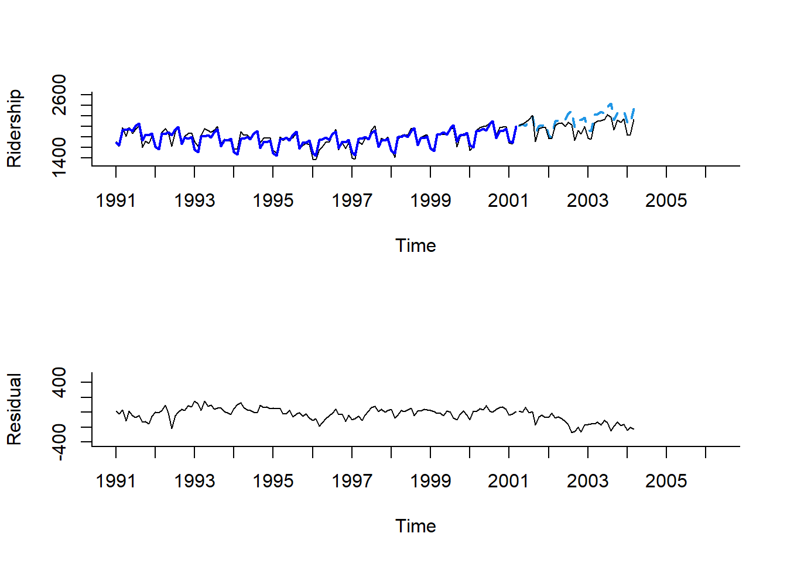
Result! 첫 번째 그래프를 보면 모형 구축과 예측이 잘 된 것을 알 수 있으며, 두 번째 그래프를 통해 잔차의 추세와 계절성이 모두 제거된 것을 알 수 있다.
7.5 Autocorrelation and ARIMA Model
7.5.1 Autocorrelation
- 전통적인 회귀모형은 관측값 간에 서로 독립을 가정한다.
- 하지만 시계열 관측값들은 대부분 서로 상관관계(자기상관관계)를 가지고 있다.
- 자기상관관계를 활용하면 보다 더 정확한 예측을 할 수 있다.
- 자기상관은 현재 시점(\(t\))과 미래의 하나 또는 그 이상의 시점(\(t+k\), \(k\)>0)에서 관측된 시계열들의 상관관계를 의미한다.
- \(k>1\)에 대하여, 강한 자기상관은 전형적인 주기변동을 의미한다.
- 예를 들어, 월별로 구성된 시계열에서 시차 12일 때 강한 양의 자기상관은 12개월을 주기로 비슷한 패턴이 반복됨을 의미한다.
- \(k=1\)에 대하여, 강한 양의 상관은 강한 선형추세를 의미한다.
- \(k=1\)에 대하여, 강한 음의 상관은 강한 스윙을 의미한다.
- \(k>1\)에 대하여, 강한 자기상관은 전형적인 주기변동을 의미한다.
- 자기 상관은 계절성 패턴을 파악하는 데 유용하며 함수
Acf()함수를 자기상관계수 그래프를 출력할 수 있다.
Acf(train.ts,
lag.max = 12,
main = "")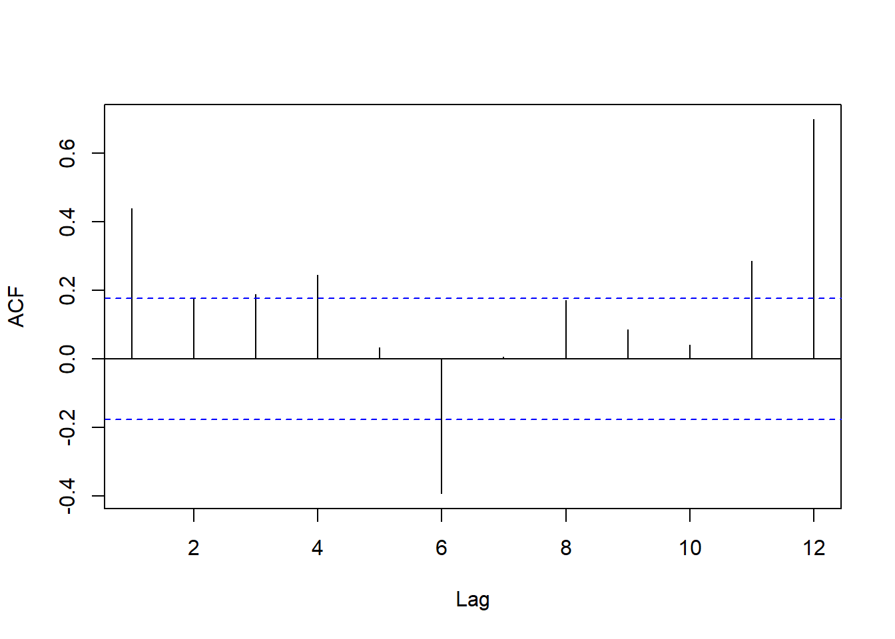
Result! 예제 데이터 Amtrak의 자기상관계수 그래프를 보면 시차 6에서 강한 음의 자기상관을 보여준다. 즉, 6개월 단위로 높아지다가 낮아지는 것을 의미한다. (여름에는 높고 겨울에는 낮음을 의미)
7.5.1.1 잔차의 자기상관
- 추가적으로 잔차의 자기상관을 살펴보는 것도 매우 유용하다.
- 잔차는 백색잡음과정(white noise)을 가정하기 때문에 독립이어야한다.
- 즉, 잔차의 자기상관계수 그래프는 막대가 모두 선 안에 있어야한다.
- 예를 들어 계절성이 잘 모형화되었다면, 잔차는 주기에서 자기상관이 0이다. 즉, 막대가 선 안에 있다.
- 다음 그래프는 이차 함수 추세와 계절변동을 반영한 회귀모형의 잔차의 자기상관계수 그래프이다.
Acf(train.lm.trend.season$residuals,
lag.max = 12,
main = "")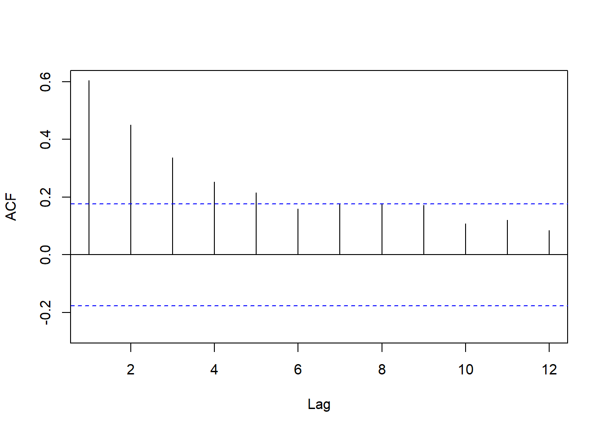
Result! 계절변동이 있는 시계열을 잘 모형화했기 때문에 주기인 12에서 막대가 선 안에 있다. 이는 시차 12에서 자기상관계수는 통계적으로 유의하다는 증거가 부족함을 의미한다. 그러나 시차 1에서 강한 양의 자기상관을 보이며 전반적으로 자기상관계수는 지수적으로 감소하는 것을 알 수 있다.
7.5.2 잔차에 대한 2차 예측모형 구축
- 잔차에 예측모형을 구축함으로써 짧은 기간에 대한 예측을 향상시킬 수 있으며, 그 절차는 다음과 같다.
- 회귀모형을 이용하여 미래 \(k\)시점의 예측값(\(F_{t+k}\))을 생성한다.
- AR 모형 또는 다른 모형을 이용하여 미래 \(k\)시점의 잔차에 대한 예측값(\(E_{t+k}\))을 생성한다.
- 예측모형을 이용하여 구한 예측값과 잔차에 대한 예측값을 더하여 향상된 예측값(\(F_{t+k}+E_{t+k}\))을 얻는다.
- 예제 데이터
Amtrak은 잔차의 자기상관이 시차 1에서 강한 양의 자기상관을 보이며 지수적으로 감소하기에 잔차에 AR(1) 모형을 구축할 수 있다.- 잔차에 대한 AR(1) 모형식은 \(E_{t}=\beta_{0}+\beta_{1}E_{t-1}+\epsilon_t\)이다.
- \(E_{t}\) : 시점 \(t\)에서 잔차
- 일반적으로 AR(1) 모형을 구축하기 위해서 시계열은 정상성을 만족해야 하지만, 잔차는 백색잡음과정을 가정하기 때문에 자기상관 외에 어떠한 추세나 주기적 행동을 포함하지 않아 정상성 확인이 따로 필요하지 않는다.
- 잔차에 대한 AR(1) 모형식은 \(E_{t}=\beta_{0}+\beta_{1}E_{t-1}+\epsilon_t\)이다.
# 1. 추세와 계절변동을 반영하는 회귀모형을 이용한 모형 구축
train.lm.trend.season <- tslm(train.ts ~ trend + I(trend^2) + season)
summary(train.lm.trend.season) # 모형 구축 결과
Call:
tslm(formula = train.ts ~ trend + I(trend^2) + season)
Residuals:
Min 1Q Median 3Q Max
-213.775 -39.363 9.711 42.422 152.187
Coefficients:
Estimate Std. Error t value Pr(>|t|)
(Intercept) 1.697e+03 2.768e+01 61.318 < 2e-16 ***
trend -7.156e+00 7.293e-01 -9.812 < 2e-16 ***
I(trend^2) 6.074e-02 5.698e-03 10.660 < 2e-16 ***
season2 -4.325e+01 3.024e+01 -1.430 0.15556
season3 2.600e+02 3.024e+01 8.598 6.60e-14 ***
season4 2.606e+02 3.102e+01 8.401 1.83e-13 ***
season5 2.938e+02 3.102e+01 9.471 6.89e-16 ***
season6 2.490e+02 3.102e+01 8.026 1.26e-12 ***
season7 3.606e+02 3.102e+01 11.626 < 2e-16 ***
season8 4.117e+02 3.102e+01 13.270 < 2e-16 ***
season9 9.032e+01 3.102e+01 2.911 0.00437 **
season10 2.146e+02 3.102e+01 6.917 3.29e-10 ***
season11 2.057e+02 3.103e+01 6.629 1.34e-09 ***
season12 2.429e+02 3.103e+01 7.829 3.44e-12 ***
---
Signif. codes: 0 '***' 0.001 '**' 0.01 '*' 0.05 '.' 0.1 ' ' 1
Residual standard error: 70.92 on 109 degrees of freedom
Multiple R-squared: 0.8246, Adjusted R-squared: 0.8037
F-statistic: 39.42 on 13 and 109 DF, p-value: < 2.2e-16# 1-1. 회귀모형을 이용한 미래 k시점에 대한 예측값
train.lm.trend.season.pred <- forecast(train.lm.trend.season,
h = nTest, # Test Dataset의 데이터 포인트 개수만큼 예측값 계산
level = 0) # 예측 구간은 계산 X
train.lm.trend.season.pred Point Forecast Lo 0 Hi 0
Apr 2001 2004.271 2004.271 2004.271
May 2001 2045.419 2045.419 2045.419
Jun 2001 2008.675 2008.675 2008.675
Jul 2001 2128.560 2128.560 2128.560
Aug 2001 2187.911 2187.911 2187.911
Sep 2001 1875.032 1875.032 1875.032
Oct 2001 2007.896 2007.896 2007.896
Nov 2001 2007.662 2007.662 2007.662
Dec 2001 2053.740 2053.740 2053.740
Jan 2002 1819.752 1819.752 1819.752
Feb 2002 1785.569 1785.569 1785.569
Mar 2002 2098.014 2098.014 2098.014
Apr 2002 2107.922 2107.922 2107.922
May 2002 2150.528 2150.528 2150.528
Jun 2002 2115.242 2115.242 2115.242
Jul 2002 2236.585 2236.585 2236.585
Aug 2002 2297.394 2297.394 2297.394
Sep 2002 1985.972 1985.972 1985.972
Oct 2002 2120.294 2120.294 2120.294
Nov 2002 2121.518 2121.518 2121.518
Dec 2002 2169.054 2169.054 2169.054
Jan 2003 1936.523 1936.523 1936.523
Feb 2003 1903.798 1903.798 1903.798
Mar 2003 2217.701 2217.701 2217.701
Apr 2003 2229.067 2229.067 2229.067
May 2003 2273.131 2273.131 2273.131
Jun 2003 2239.303 2239.303 2239.303
Jul 2003 2362.104 2362.104 2362.104
Aug 2003 2424.371 2424.371 2424.371
Sep 2003 2114.406 2114.406 2114.406
Oct 2003 2250.186 2250.186 2250.186
Nov 2003 2252.868 2252.868 2252.868
Dec 2003 2301.862 2301.862 2301.862
Jan 2004 2070.789 2070.789 2070.789
Feb 2004 2039.522 2039.522 2039.522
Mar 2004 2354.883 2354.883 2354.883# 2. 잔차에 AR(1) 모형 구축
train.res.arima <- arima(train.lm.trend.season$residuals,
order = c(1,0,0))
summary(train.res.arima) # 모형 구축 결과
Call:
arima(x = train.lm.trend.season$residuals, order = c(1, 0, 0))
Coefficients:
ar1 intercept
0.5998 0.3728
s.e. 0.0712 11.8408
sigma^2 estimated as 2829: log likelihood = -663.54, aic = 1333.08
Training set error measures:
ME RMSE MAE MPE MAPE MASE ACF1
Training set -0.1223159 53.19141 39.8277 103.3885 175.2219 0.8492545 -0.07509305Result! 잔차에 AR(1) 모형에 대한 추정된 회귀식은 \({E}_{t}=0.3728+0.5998(E_{t-1}-0.3728)+\epsilon_t\)이다. 게다가, AR(1) 회귀 계수 0.5998와 시차가 1일 때 잔차의 자기상관 0.6041은 비슷하다.
# 2-1. 미래 k시점에 대한 잔차의 예측값
train.res.arima.pred <- forecast(train.res.arima,
h = nTest, # Test Dataset의 데이터 포인트 개수만큼 예측값 계산
level = 0) # 예측 구간은 계산 X
train.res.arima.pred Point Forecast Lo 0 Hi 0
Apr 2001 7.4111098 7.4111098 7.4111098
May 2001 4.5942671 4.5942671 4.5942671
Jun 2001 2.9047772 2.9047772 2.9047772
Jul 2001 1.8914526 1.8914526 1.8914526
Aug 2001 1.2836792 1.2836792 1.2836792
Sep 2001 0.9191481 0.9191481 0.9191481
Oct 2001 0.7005091 0.7005091 0.7005091
Nov 2001 0.5693735 0.5693735 0.5693735
Dec 2001 0.4907208 0.4907208 0.4907208
Jan 2002 0.4435463 0.4435463 0.4435463
Feb 2002 0.4152520 0.4152520 0.4152520
Mar 2002 0.3982816 0.3982816 0.3982816
Apr 2002 0.3881030 0.3881030 0.3881030
May 2002 0.3819981 0.3819981 0.3819981
Jun 2002 0.3783365 0.3783365 0.3783365
Jul 2002 0.3761403 0.3761403 0.3761403
Aug 2002 0.3748231 0.3748231 0.3748231
Sep 2002 0.3740331 0.3740331 0.3740331
Oct 2002 0.3735592 0.3735592 0.3735592
Nov 2002 0.3732750 0.3732750 0.3732750
Dec 2002 0.3731045 0.3731045 0.3731045
Jan 2003 0.3730023 0.3730023 0.3730023
Feb 2003 0.3729410 0.3729410 0.3729410
Mar 2003 0.3729042 0.3729042 0.3729042
Apr 2003 0.3728821 0.3728821 0.3728821
May 2003 0.3728689 0.3728689 0.3728689
Jun 2003 0.3728610 0.3728610 0.3728610
Jul 2003 0.3728562 0.3728562 0.3728562
Aug 2003 0.3728534 0.3728534 0.3728534
Sep 2003 0.3728517 0.3728517 0.3728517
Oct 2003 0.3728506 0.3728506 0.3728506
Nov 2003 0.3728500 0.3728500 0.3728500
Dec 2003 0.3728496 0.3728496 0.3728496
Jan 2004 0.3728494 0.3728494 0.3728494
Feb 2004 0.3728493 0.3728493 0.3728493
Mar 2004 0.3728492 0.3728492 0.3728492Result! 미래 1시점에서 잔차 예측값은 \(0.3728+0.5998*(12.108-0.3728)=7.411\)이다.
par(mfrow = c(2,1))
# 잔차에 대한 시계열 그림
plot(train.lm.trend.season$residuals, # 잔차
ylim = c(-250, 250), xlim = c(1991, 2006.25), # 축 범위
ylab = "Residual", xlab = "Time", # 축 이름
bty = "l", # 선으로 표시
xaxt = "n", # X축 눈금 제거
main = "") # 제목 제거
# For X축 눈금 표시
axis(1, at = seq(1991, 2006, 1),
labels = format(seq(1991, 2006, 1)))
# Test Dataset 데이터 포인트에 대한 잔차 예측값
lines(train.res.arima.pred$fitted,
lwd = 2, # 선 굵기
col = "blue") # 선 색깔
# AR(1) 모형에 대한 잔차의 자기상관계수 그림
Acf(train.res.arima$residuals, lag.max = 12)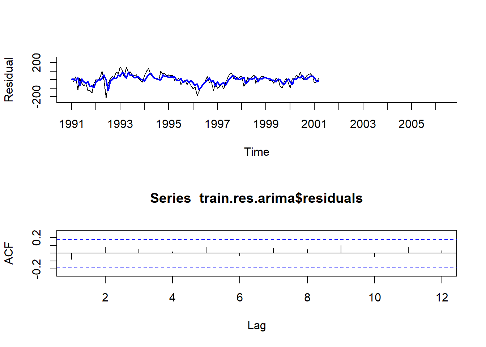
Result! 첫 번째 그래프를 보면 회귀모형에 대한 잔차와 AR(1) 모형에 의해 추정된 잔차는 서로 비슷한 것을 알 수 있다. 두 번째 그래프를 보면 AR(1) 모형에 의해 추정된 잔차의 자기상관계수는 막대가 모두 선 안에 있으므로 독립성을 만족한다는 것을 알 수 있다.
# 3. 최종 예측 = 회귀모형에 의한 예측 + AR(1) 모형에 의한 예측
Improved_forecast <- data.frame(pred.y = train.lm.trend.season.pred$mean, # 회귀모형에 의한 예측값
pred.res = train.res.arima.pred$mean) %>% # AR(1) 모형에 의한 잔차 예측값
mutate(Imp.pred = pred.y + pred.res) # 두 예측값을 더한 최종 예측값
Improved_forecast$Imp.pred Jan Feb Mar Apr May Jun Jul Aug Sep Oct Nov Dec
2001 2011.682 2050.014 2011.580 2130.452 2189.195 1875.951 2008.596 2008.231 2054.230
2002 1820.195 1785.984 2098.412 2108.310 2150.910 2115.620 2236.961 2297.769 1986.346 2120.668 2121.891 2169.427
2003 1936.896 1904.171 2218.074 2229.440 2273.504 2239.676 2362.476 2424.743 2114.779 2250.559 2253.241 2302.235
2004 2071.162 2039.895 2355.256 Result! 미래 1시점에 대해 향상된 예측값은 \(2004.271+7.411=2011.682\)로 기존의 예측값 2004.271보다 실제값 2023.792에 더 가깝다.
# 정확도
forecast::accuracy(Improved_forecast$Imp.pred, test.ts) ME RMSE MAE MPE MAPE ACF1 Theil's U
Test set -127.0267 153.5331 131.8537 -6.474276 6.705803 0.705547 0.8978628par(mfrow = c(1,1))
# 추세와 계절변동을 반영한 회귀모형에 대한 예측값
plot(train.lm.trend.season.pred,
ylim = c(1300, 2600), xlim = c(1991, 2006.25), # 축 범위
ylab = "Ridership", xlab = "Time", # 축 이름
bty = "l", # 선으로 표시
xaxt = "n", # X축 눈금 제거
main = "") # 제목 제거
# For X축 눈금 표시
axis(1, at = seq(1991, 2006, 1),
labels = format(seq(1991, 2006, 1)))
# Test Dataset 데이터 포인트에 대한 향상된 예측값
lines(Improved_forecast$Imp.pred,
lwd = 1, # 선 굵기
col = "orange") # 선 색깔
# Test Dataset 데이터 포인트
lines(test.ts)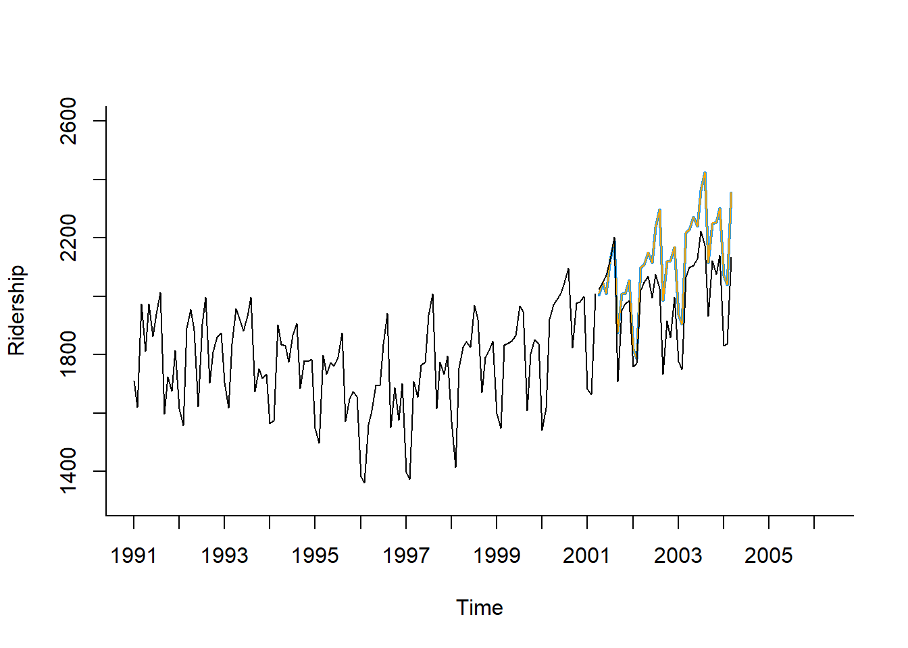